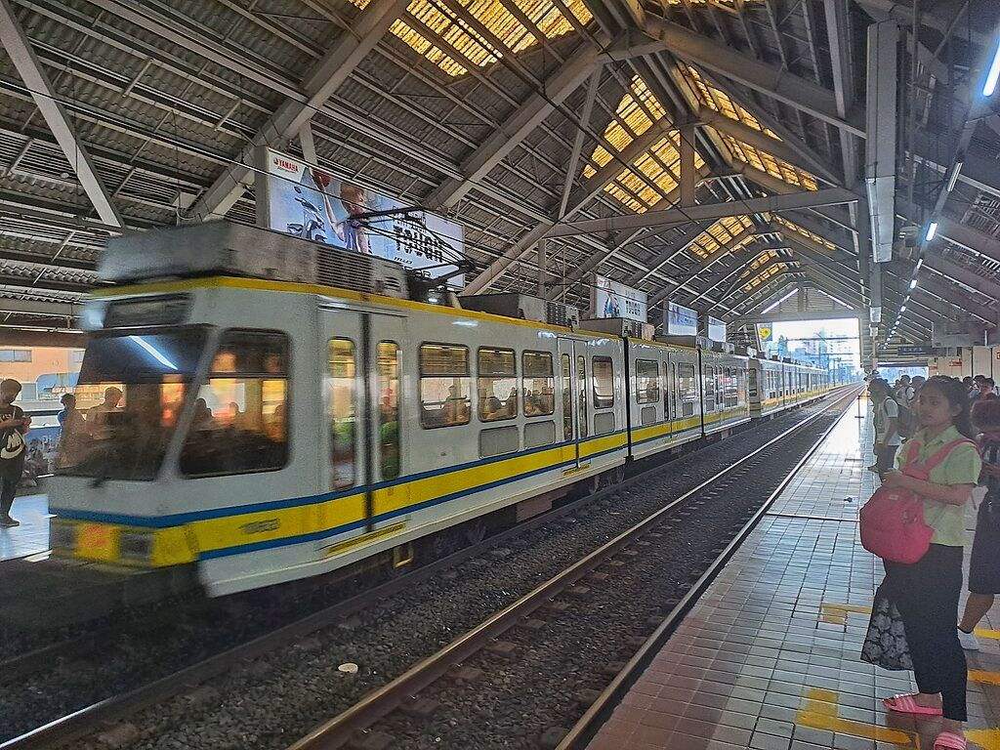

Monumento
LRT-1 station
Monumento station is an elevated Manila Light Rail Transit (LRT) station situated on Line 1. The station serves the southern portion of Caloocan, and is named after the most famous landmark of Caloocan, the Monumento Circle, which houses the Bonifacio Monument, a famous monument to Andrés Bonifacio. The name Monumento itself is derived from the Spanish word for monument. Being a former northern terminus of Line 1, it is called Monumento Terminal.
Monumento is located on Rizal Avenue in Grace Park West & Grace Park East, Caloocan. It is the third station for trains headed to Baclaran, the eighteenth station for trains headed to Fernando Poe Jr., and is one of the two Line 1 stations serving the city of Caloocan, the other being 5th Avenue.
LRTA has modified two tracks at Monumento leading to Balintawak, Fernando Poe Jr., and North Avenue stations.
It underwent renovations in September 2017 and was relaunched on February 14, 2018, as Yamaha Monumento station as Light Rail Manila Corporation entered into a naming rights deal with Yamaha Motor Philippines.
| Monumento | |||||||
|---|---|---|---|---|---|---|---|
|  | |||||||
| General information | |||||||
| Other names | Yamaha Monumento | ||||||
| Location | 706 Rizal Avenue Extension,, Grace Park East, Caloocan, Metro Manila, Philippines | ||||||
| Coordinates | 14°39′14.74″N 120°59′02.06″E |
||||||
| Owned by | Department of Transportation Light Rail Transit Authority |
||||||
| Operated by | Light Rail Manila Corporation | ||||||
| Line(s) | Line 1 | ||||||
| Platforms | 2 (2 side) | ||||||
| Tracks | 2 | ||||||
| Construction | |||||||
| Structure type | Elevated | ||||||
| Parking | Yes (SM City Grand Central) | ||||||
| Accessible | Yes | ||||||
| Other information | |||||||
| Station code | MO | ||||||
| History | |||||||
| Opened | May 12, 1985 | ||||||
| Services | |||||||
|
|||||||
Monumento is located on Rizal Avenue in Grace Park West & Grace Park East, Caloocan. It is the third station for trains headed to Baclaran, the eighteenth station for trains headed to Fernando Poe Jr., and is one of the two Line 1 stations serving the city of Caloocan, the other being 5th Avenue.
LRTA has modified two tracks at Monumento leading to Balintawak, Fernando Poe Jr., and North Avenue stations.
It underwent renovations in September 2017 and was relaunched on February 14, 2018, as Yamaha Monumento station as Light Rail Manila Corporation entered into a naming rights deal with Yamaha Motor Philippines.
The station serves as a terminal and transfer point for several bus and jeepney routes serving the cities of Manila, Caloocan, Malabon, Navotas, and Valenzuela via Rizal Avenue Extension, Samson Road, and MacArthur Highway. Major provincial bus companies also have their own terminals right outside the station like Victory Liner, First North Luzon Transit, and RJ Express.
There was a proposal to extend the Manila Metro Rail Transit System, or MRT-3, to Monumento, which would result in both stations being linked and Monumento terminal becoming a transfer point between LRT-1 and MRT-3. Currently, these plans have been shelved in favor of an extension of the LRT-1 Line towards North Avenue over the same routing as the previous MRT-3 proposal.
It is directly linked to SM City Grand Central, which replaced the former Ever Gotesco Grand Central that burned down. The station's east gate and platform are directly connected to the LRT Caloocan Mall.
| Existing stations | |
|---|---|
|
Baclaran
EDSA Libertad Gil Puyat Vito Cruz Quirino Pedro Gil United Nations Central Carriedo |
Doroteo Jose
Bambang Tayuman Blumentritt Abad Santos R. Papa 5th Avenue Monumento Balintawak Fernando Poe Jr. |
| Under construction | |
|
Redemptorist
MIA Asia World Ninoy Aquino |
Dr. Santos
Las Piñas Zapote Niog |
| North Triangle | |